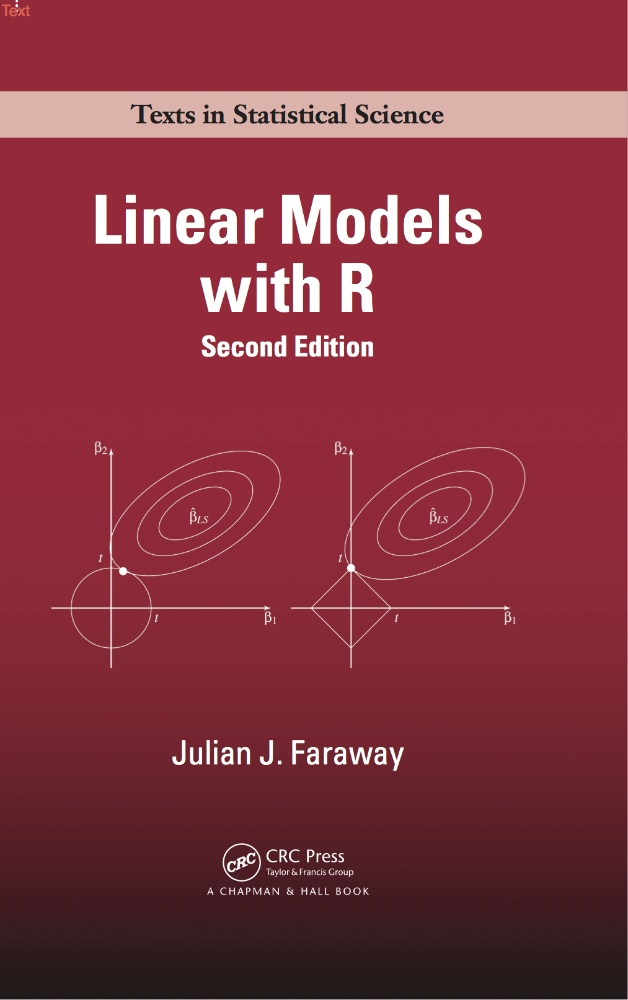

Main topics
- Interaction effects
- The modeler’s problem
- All/best-subsets
- Forward selection and/or backward elimination
- Modern alternatives
Brandon M. Greenwell
University of Cincinnati
pkgs <- c(
"GGally", # for generating some of the plots
"ggplot2", # for generating some of the plots
"gridExtra", # for generating some of the plots
"ISLR2", # for the MLB salary data
"lattice", # for generating some of the plots
"leaps", # for all-subsets regression
"SMPracticals" # for Hald's cement data
)
install <- setdiff(pkgs, installed.packages()[, "Package"])
install.packages(install)
library(ggplot2)
theme_set(theme_bw()) # set ggplot2 theme for the lecture
# Use a more colorblind-friendly color palette
palette("Okabe-Ito")An R Companion to Applied regression (3rd ed.)
Chapter 4: Fitting Linear Models
Chapter 8: Regression Diagnostics
The R package car

Linear Models with R (2nd ed.)
Chapter 9: Transformation
Chapter 14: Categorical Predictors
There’s a Python version of the book as well
The R package faraway

Some great talks that I highly encourage watching (especially if you plan on becoming a data scientist):
Frank Harrell’s talk on some of the Controversies in Predictive Modeling, Machine Learning, and Validation
Frank Harrell’s talk regarding some Musings on Statistical Models vs. Machine Learning in Health Research
Trevor Hastie’s talk on Predictive Models in Health Research
Anything by Brad Efron…If you plan to publish/present a lot in the sciences, I highly encourage this talk
In our previous analyses of the MLB salary data, we assumed that the model was additive: \[E\left(\mathtt{Salary}\right) = \beta_0 + \beta_1 \mathtt{CRBI} + \beta_2 \mathtt{CHits} + \beta_3 \mathtt{Walks} + \beta_4 \mathtt{Runs}\]
This model assumes, for example, that the average effect on Salary of a one-unit increase in CRBI is always \(\beta_1\), regardless of the value of the other predictors
By including an interaction effect (e.g., the product) between, say, CRBI and CHits, we allow the effect of CRBI on Salary to vary with CHits (and vice versa)
This is no longer an additive model since \[E\left(\mathtt{Salary}\right) = f_1\left( \mathtt{Walks}\right) + f_2\left( \mathtt{Runs}\right) + f_3\left(\mathtt{CRBI}, \mathtt{CHits}\right)\]
The term \(f_3\left(\mathtt{CRBI}, \mathtt{CHits}\right)\) is called a two-way interaction effect because it is a function of two predictors
You can think of interaction effects as a type of (restrictive) curvature. To illustrate, consider the following models:
\[\begin{align}E\left(Y|x_1, x_2\right) &= 0.3 + 0.5 x_1 - 0.7 x_2 \\ E\left(Y|x_1, x_2\right) &= 0.3 + 0.5 x_1 - 0.7 x_2 + 3.4 x_1 x_2\end{align}\]
Each will result in a 2-D plane which can be visualized quite easily using R’s built-in lattice package
library(lattice)
# Function to compute mean response for both a simple additive, and 2-way
# interaction model
regFun <- function(x1, x2, interact = FALSE, sigma = 0.3) {
mu <- 0.3 + 0.5 * x1 - 0.7 * x2
if (isTRUE(interact)) {
mu + 3.4 * x1 * x2
} else {
mu
}
}
# Generate data to plot
x1 <- seq(from = 0, to = 1, length = 25)
x2 <- seq(from = 0, to = 5, length = 25)
df1 <- df2 <- expand.grid("x1" = x1, "x2" = x2)
df1$y <- regFun(df1$x1, df1$x2)
df2$y <- regFun(df2$x1, df2$x2, interact = TRUE)
# Use lattice's wireframe to plot each surface
wireframe(y ~ x1 * x2, data = df1, drape = TRUE, colorkey = TRUE,
scales = list(arrows = FALSE), screen = list(z = 120, x = -60),
main = "No interaction effect")
wireframe(y ~ x1 * x2, data = df2, drape = TRUE, colorkey = TRUE,
scales = list(arrows = FALSE), screen = list(z = 120, x = -60),
main = "Interaction effect")
# Show slices of each surface along the x2-axis
par(mfrow = c(1, 2)) # place plots in a single row
plot(NULL, NULL, xlim = c(0, 1), ylim = range(df1$y), xlab = "x1", ylab = "y",
main = "No interaction effect")
for (x in x2) {
lines(x1, 0.3 + 0.5 * x1 - 0.7 * x)
}
plot(NULL, NULL, xlim = c(0, 1), ylim = range(df2$y), xlab = "x1", ylab = "y",
main = "Interaction effect")
for (x in x2) {
lines(x1, 0.3 + 0.5 * x1 - 0.7 * x + 3.4 * x1 * x)
}“Conflicting” goals in regression model building (bias-variance tradeoff):
Want as many (useful) predictors as possible so that the “information content” in the features will influence \(\hat{Y}\) (low bias)
Want as few predictors as necessary because \(Var\left(\hat{Y}\right)\) increases with the number of predictors (low variance)
Need to find a compromise that leads to the “best” regression equation
It is the analyst’s responsibility to modify the predictors to introduce nonlinear dependencies and interaction effects
Typically a tedious trial and error process
Also need to make sure model assumptions are reasonably valid
A parsimonious model is the simplest model with the least assumptions and variables, but with the greatest explanatory power!
Variable selection/ranking is an incredibly challenging problem!
For variable selection in general:
\(Pr\left(\text{selecting the "right" variables} | \text{data}\right) = 0\)
“Corollary” to Box’s famous quote:
My current favorite approach is based on the GUIDE decision tree algorithm
GUIDE stands for generalized, unbiased, interaction detection and estimation
This approach use chi-square tests to measure the “associative importance” of each predictor
LOTS OF BELLS AND WHISTLES! (e.g., thresholding)
Results from a default GUIDE variable importance scoring run:
| Variable | Importance | Threshold |
|---|---|---|
| CAtBat | 9.5240 | H |
| CHits | 8.8790 | H |
| CRuns | 8.7870 | H |
| CRBI | 8.7040 | H |
| CWalks | 7.0580 | H |
| Years | 6.3920 | H |
| CHmRun | 5.0760 | H |
| Hits | 4.9180 | H |
| RBI | 3.8780 | H |
| AtBat | 3.6580 | H |
| Runs | 3.1810 | H |
| Walks | 2.7750 | H |
| HmRun | 2.0970 | H |
| PutOuts | 1.3050 | L |
| Errors | 0.6955 | U |
| NewLeague | 0.5325 | U |
| Division | 0.5253 | U |
| League | 0.3582 | U |
| Assists | 0.1457 | U |
The most direct approach is called all-subsets or best-subsets regression:
With \(p\) predictors, there are \(2 ^ p - 1\) possible models!
It is often impossible to examine all possible models; for example, with 40 potential predictors, there are over a billion models! Instead we often rely on automated approaches that search through a subset of all possible models. We’ll discuss common approaches referred as stepwise regression techniques:
Forward selection
Backward elimination
A hybrid of both forward selection and backward elimination
Some criteria for helping to select an “optimal” model in the path of models produced by automatic search procedures:
Adjusted R-squared (\(R_{adj}^2\)) (larger is better)
Mean square error (MSE) or root mean square error (RMSE) (smaller is better)
Mallow’s \(C_p\) (smaller is better)
Akaike information criterion (AIC) (smaller is better)
Bayesian information criterion (BIC) (smaller is better)
Predicted residual sum of squares (PRESS) (smaller is better)
Recall that \(MSE = \frac{1}{n - k}\sum_{i=1}^n\left(y_i - \hat{y}_i\right)^2\) and \(R_{adj}^2 = 1 - \frac{MSE}{SST / \left(n - 1\right)}\)
Both MSE (and hence RMSE) and \(R_{adj}^2\) take the number of coefficients, \(k\), into account
Unlike \(R^2\), \(R_{adj}^2\) increases if and only if MSE (or RMSE) decreases
I prefer \(R_{adj}^2\) since it is more interpretable by itself (e.g., as the fraction of variance in the response explained by the predictors in the current model)
General formula: \(IC = -2 \log\left(L\right) + kp\)
AIC and BIC correspond to \(k = 2\) and \(k = \ln\left(n\right)\), respectively
For a fixed sample size \(n\), the first term decreases as \(p\), the number of coefficients, increases
For a fixed sample size \(n\), the second term increases with \(p\)
BIC penalizes large \(p\) more than AIC whenever \(n \ge 8\) (i.e., BIC tends to favor more parsimonious models)
R functions: AIC(), BIC(), and extractAIC()
\(PRESS = \sum_{i = 1}^n \left(y_i - \hat{y}_{\left(i\right)}\right)^2 = \sum_{i = 1}^n e_{\left(i\right)}^2 = \sum_{i = 1}^n\left(\frac{e_i}{1 - h_i}\right)^2\)
Summarizes the prediction errors across all observations (similar to SSE)
Models with smaller PRESS statistics are considered good candidate models (in the sense that they have smaller prediction errors)
Equivalent to leave on out cross-validation (LOOCV)
Can be computed at the cost of a single fit!
R has no built-in PRESS() function, so we’ll write our own!
x1 x2 x3 x4 y
1 7 26 6 60 78.5
2 1 29 15 52 74.3
3 11 56 8 20 104.3
4 11 31 8 47 87.6
5 7 52 6 33 95.9
6 11 55 9 22 109.2
7 3 71 17 6 102.7
8 1 31 22 44 72.5
9 2 54 18 22 93.1
10 21 47 4 26 115.9
11 1 40 23 34 83.8
12 11 66 9 12 113.3
13 10 68 8 12 109.4How many subsets are possible?
\(2^4 - 1 = 15\)
# Load required packages
library(leaps)
# All subsets regression (main effects only)
a1 <- regsubsets(y ~ ., data = cement, # see ?leaps::regsubsets
nbest = 6, nvmax = 4) # why 6 and 4 here?
a1Subset selection object
Call: regsubsets.formula(y ~ ., data = cement, nbest = 6, nvmax = 4)
4 Variables (and intercept)
Forced in Forced out
x1 FALSE FALSE
x2 FALSE FALSE
x3 FALSE FALSE
x4 FALSE FALSE
6 subsets of each size up to 4
Selection Algorithm: exhaustive
Call:
lm(formula = y ~ x1 + x2, data = cement)
Residuals:
Min 1Q Median 3Q Max
-2.893 -1.574 -1.302 1.363 4.048
Coefficients:
Estimate Std. Error t value Pr(>|t|)
(Intercept) 52.57735 2.28617 23.00 5.46e-10 ***
x1 1.46831 0.12130 12.11 2.69e-07 ***
x2 0.66225 0.04585 14.44 5.03e-08 ***
---
Signif. codes: 0 '***' 0.001 '**' 0.01 '*' 0.05 '.' 0.1 ' ' 1
Residual standard error: 2.406 on 10 degrees of freedom
Multiple R-squared: 0.9787, Adjusted R-squared: 0.9744
F-statistic: 229.5 on 2 and 10 DF, p-value: 4.407e-09nsubsets <- function(x, max.int = 1) {
if (max.int > x) {
stop("`max.int` cannot be larger than ",
x, ".", call. = FALSE)
}
x <- as.integer(x)
max.int <- as.integer(max.int)
res <- 0
for (i in seq_len(max.int)) {
res <- res + choose(n = x, k = i)
}
2 ^ res - 1
}
# How many possible subsets if we allow for interactions?
sapply(1:4, FUN = function(x) nsubsets(4, max.int = x))[1] 15 1023 16383 32767# All subsets regression (with two-way interactions)
a2 <- regsubsets(y ~ .^2, data = cement,
nbest = 40, nvmax = 1000)
a2Subset selection object
Call: regsubsets.formula(y ~ .^2, data = cement, nbest = 40, nvmax = 1000)
10 Variables (and intercept)
Forced in Forced out
x1 FALSE FALSE
x2 FALSE FALSE
x3 FALSE FALSE
x4 FALSE FALSE
x1:x2 FALSE FALSE
x1:x3 FALSE FALSE
x1:x4 FALSE FALSE
x2:x3 FALSE FALSE
x2:x4 FALSE FALSE
x3:x4 FALSE FALSE
40 subsets of each size up to 10
Selection Algorithm: exhaustiveCoefficient table for “best” model based on BIC that allows for up to two-way interaction effects:
Estimate Std. Error t value Pr(>|t|)
(Intercept) 23.668 8.472 2.794 0.038
x3 -5.763 1.000 -5.761 0.002
x4 0.166 0.072 2.305 0.069
x1:x2 0.058 0.004 13.924 0.000
x3:x1 0.068 0.015 4.400 0.007
x3:x2 0.122 0.017 6.994 0.001
x4:x2 0.016 0.002 9.329 0.000
x3:x4 0.063 0.014 4.535 0.006What’s the maximum number of terms we could have if we allowed all possible interaction effects (e.g., the four-way interaction effect \(x_1 x_2 x_3 x_4\))?
If we include an interaction in a model, we should also include all the lower level effects involved in the interaction, even if the p-values associated with their coefficients are not significant!
⚠️ all-subsets regression does not respect this principle ⚠️
Rather than search through all possible subsets (which becomes infeasible for \(p\) much larger than 40), we can seek a good path through them!
Begin with the null model (i.e., an intercept-only model)
Fit \(p\) simple linear regressions and add to the null model the predictor that gives the “biggest improvement”
Add to that model the predictor that results in the “biggest improvement” among all two-predictor models
Continue until some stopping rule is satisfied, for example when all remaining variables have a p-value above some threshold
Note: FS can still be used when \(n < k\), where \(k\) is the number of coefficients to be estimated (i.e., wide data)!
Pretty much the opposite of FS (i.e., start with a full model and work backwards)
Start with all candidate predictors in the model (including interactions)
Fit \(p - 1\) simple linear regressions and remove from the model the predictor that has the “least impact on the fit”
The new \(\left(p - 1\right)\)-predictor model is fit, and the predictor with the “least impact on the fit” is removed
Continue until some stopping rule is satisfied, for example when all remaining variables have a p-value above some threshold
Note: BE requires that \(n \ge k\), where \(k\) is the number of coefficients to be estimated
Base R’s step() function and MASS’s stepAIC() function can be used to choose a model by AIC (or BIC) in a stepwise fashion (i.e., FS, BE, or a hybrid of both)
leaps’s regsubsets() function can be used to choose a model using an exhaustive search (i.e., all-subsets), a stepwise algorithm (i.e., FS, BE, or a hybrid of both), or sequential replacement
mlb <- ISLR2::Hitters
mlb <- mlb[!is.na(mlb$Salary), ] # rm rows w/ missing response values
str(mlb)'data.frame': 263 obs. of 20 variables:
$ AtBat : int 315 479 496 321 594 185 298 323 401 574 ...
$ Hits : int 81 130 141 87 169 37 73 81 92 159 ...
$ HmRun : int 7 18 20 10 4 1 0 6 17 21 ...
$ Runs : int 24 66 65 39 74 23 24 26 49 107 ...
$ RBI : int 38 72 78 42 51 8 24 32 66 75 ...
$ Walks : int 39 76 37 30 35 21 7 8 65 59 ...
$ Years : int 14 3 11 2 11 2 3 2 13 10 ...
$ CAtBat : int 3449 1624 5628 396 4408 214 509 341 5206 4631 ...
$ CHits : int 835 457 1575 101 1133 42 108 86 1332 1300 ...
$ CHmRun : int 69 63 225 12 19 1 0 6 253 90 ...
$ CRuns : int 321 224 828 48 501 30 41 32 784 702 ...
$ CRBI : int 414 266 838 46 336 9 37 34 890 504 ...
$ CWalks : int 375 263 354 33 194 24 12 8 866 488 ...
$ League : Factor w/ 2 levels "A","N": 2 1 2 2 1 2 1 2 1 1 ...
$ Division : Factor w/ 2 levels "E","W": 2 2 1 1 2 1 2 2 1 1 ...
$ PutOuts : int 632 880 200 805 282 76 121 143 0 238 ...
$ Assists : int 43 82 11 40 421 127 283 290 0 445 ...
$ Errors : int 10 14 3 4 25 7 9 19 0 22 ...
$ Salary : num 475 480 500 91.5 750 ...
$ NewLeague: Factor w/ 2 levels "A","N": 2 1 2 2 1 1 1 2 1 1 ...Forward selection:
(Intercept) CRBI
274.5803864 0.7909536 (Intercept) Hits CRBI
-47.9559022 3.3008446 0.6898994 Backward elimination:
Call:
lm(formula = Salary ~ AtBat + Hits + Walks + CRBI + Division +
PutOuts, data = mlb)
Residuals:
Min 1Q Median 3Q Max
-873.11 -181.72 -25.91 141.77 2040.47
Coefficients:
Estimate Std. Error t value Pr(>|t|)
(Intercept) 91.51180 65.00006 1.408 0.160382
AtBat -1.86859 0.52742 -3.543 0.000470 ***
Hits 7.60440 1.66254 4.574 7.46e-06 ***
Walks 3.69765 1.21036 3.055 0.002488 **
CRBI 0.64302 0.06443 9.979 < 2e-16 ***
DivisionW -122.95153 39.82029 -3.088 0.002239 **
PutOuts 0.26431 0.07477 3.535 0.000484 ***
---
Signif. codes: 0 '***' 0.001 '**' 0.01 '*' 0.05 '.' 0.1 ' ' 1
Residual standard error: 319.9 on 256 degrees of freedom
Multiple R-squared: 0.5087, Adjusted R-squared: 0.4972
F-statistic: 44.18 on 6 and 256 DF, p-value: < 2.2e-16Traditional inference is NOT VALID here!!
No variable selection technique guarantees to find the “best” regression equation for the data set of interest
Different variable selection techniques may very well give different results (and they often do!)
Complete reliance on the algorithm for results is to be avoided (Why? 🤔)
Other valuable information such as experience with, and knowledge of the data and problem, should be utilized whenever possible!!
Model selection techniques are high variance procedures
And many more…
Multivariate adaptive regression splines (MARS)
Tree-based methods (like GUIDE, gradient tree boosting, and random forests)

BANA 7052: Applied Linear Regression